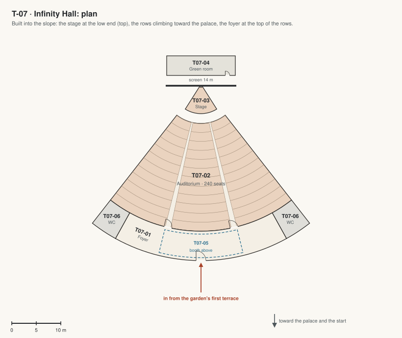

T-07 · Infinity Hall
A lecture theatre for 240 on the west side of the garden domes, built into the slope like a Greek theatre; in from the upper garden dome by a link.

| Code | Room | What it is for | Size |
|---|---|---|---|
| T07-01 | Foyer | The way in from the garden's first terrace, at the top of the rows: a bar, coat racks, posters of the season's talks. Also: Receptions after a talk. | 200 m² |
| T07-02 | Auditorium | 240 seats on 12 raked rows facing a screen 14 m wide: talks, contests, films, the graduation. Also: Concerts. | 550 m² |
| T07-03 | Stage | A timber stage 12 m wide with a lectern and a demonstration table. | 20 m² |
| T07-04 | Green room | Behind the stage: where speakers wait, with a mirror and a sofa. | 56 m² |
| T07-05 | Projection and sound booth | Above the foyer, behind glass: the projector, the sound desk, the lights. | 77 m² |
| T07-06 | Washrooms | Off the foyer. | 62 m² |